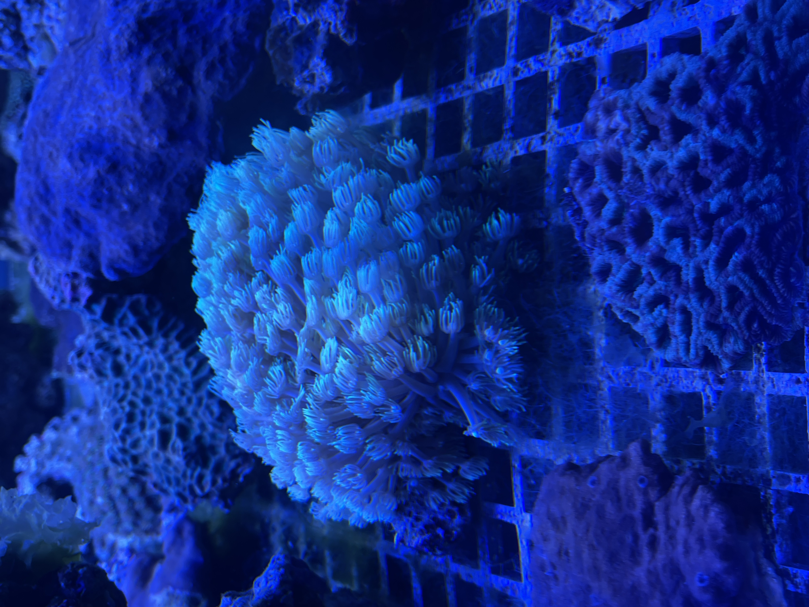

形态特征
伞软珊瑚属每个珊瑚虫通常都长有8只触手，这些触手从分枝状的珊瑚虫体末端伸出，形态犹如一把把张开的小伞。它们体内共生有虫黄藻，这使得活体珊瑚常呈现出黄色、粉色、棕色、白色乃至黑色等多种颜色。 群体通过共肉匍匐扩张，短时间即可覆盖岩面。
伞软珊瑚属（学名：Xenia）以连续“跳动”的触手著称，整片群体像呼吸般张合，能够搅动水流并维持礁坪含氧量，是浅海礁坪常见的软珊瑚。


伞软珊瑚属每个珊瑚虫通常都长有8只触手，这些触手从分枝状的珊瑚虫体末端伸出，形态犹如一把把张开的小伞。它们体内共生有虫黄藻，这使得活体珊瑚常呈现出黄色、粉色、棕色、白色乃至黑色等多种颜色。 群体通过共肉匍匐扩张，短时间即可覆盖岩面。
伞软珊瑚属主要分布于印度洋-太平洋海域的温暖珊瑚礁环境中。从西印度洋的红海、桑给巴尔，到太平洋的印尼、菲律宾、澳大利亚等地都有它们的身影。它们通常栖息在光照充足的浅海区，深度范围大致从潮下带到50米深的水域，特别喜欢生长在强光带的礁石缝隙或礁坡上。部分种类也被发现于水流中等至较强的环境中。
伞软珊瑚属持续拍动有助于排除沉积物并带动周围水体交换，为小型甲壳动物与鱼苗提供隐蔽处。它们生长迅速，并通过无性繁殖（如出芽或匍匐茎蔓延）快速占领礁石表面。这种强大的扩张能力使其具有侵略性生长特性，能够覆盖周边的礁石结构，甚至在某些地区排挤本地珊瑚，从而影响珊瑚群落的组成和演替。研究表明，像Xenia umbellata这样的广布种被用作模型生物来研究环境变化（如海洋酸化、温度升高）对珊瑚的影响。一些种类表现出对磷酸盐富集和温度升高的较强抵抗能力，这使它们在变化的海洋环境中可能成为潜在的优势物种。